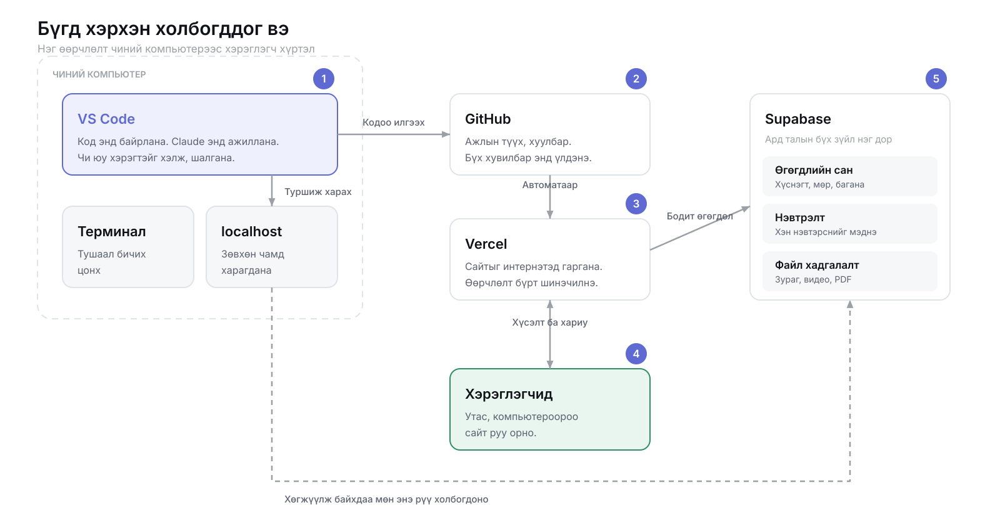

ГАРЫН АВЛАГА · 01
Код бичихгүйгээр ойлгох. Юу юу байдаг вэ, юу нь юуг хийдэг вэ, тэднийг хэрхэн зөв захиалах вэ — зурагтайгаар, эхнээс нь.
Энэ ном код бичиж сургахгүй. Кодын ертөнцөд юу юу байдгийг, юуг нь юу гэж нэрлэдгийг танилцуулна — ингэснээр та хүссэн зүйлээ зөв үгээр захиалж чаддаг болно.
Код бичиж үзээгүй, бичих ч бодолгүй хүнд. Та программ бичихгүй — захиална. Гэхдээ захиалахын тулд юу захиалж байгаагаа мэдэх хэрэгтэй, тэр мэдлэгийг энэ ном өгнө.
Хичээл 1 · Хамгийн эхний ойлголт
Код бол компьютерын яг дагаж биелүүлдэг заавар. Өөр юу ч биш. Ид шид ч биш, математик ч биш — дараалсан заавар.
Хоолны жорыг бодоод үз. «Ус буцалга», «давс нэм», «арван минут чана» — дараалсан заавар. Хүн жорыг уншаад дутууг нь өөрөө нөхдөг: хэдэн грамм давс гэж бичээгүй ч чи мэдэж байгаа.
Компьютер нөхөхгүй. Хэдийг нь хэлээгүй бол асуухгүй, таахгүй — зогсоно.
Промпт бичихэд яг ижил дүрэм үйлчилнэ. Хиймэл оюун хүнээс хамаагүй ухаантай таадаг ч, тодорхой хэлсэн зүйлийг үргэлж илүү зөв хийдэг. «Сайхан хуудас хийж өг» гэхээр таана, «цэнхэр өнгийн, гурван хэсэгтэй, дээр нь миний нэр байх хуудас» гэхээр хийнэ.
Кодыг тусгай хэрэгсэл дээр бичдэг гэж боддог. Үгүй. Код бол текст файл — Notepad дээр ч бичиж болно. Ялгаа нь тэр текстийг уншиж, биелүүлдэг програм байдагт л оршино.
JavaScript, Python, Swift — эдгээр нь хэл. Хүний хэлтэй адил: үг, дүрэм, утга. Ялгаа нь дүрэм нь маш цөөхөн бөгөөд огт уян хатан биш.
Нэг хэл ойлгосон хүнд дараагийнх нь илүү хялбар болдог. Учир нь ойлголтууд нь бүх хэлэнд ижил — зөвхөн бичлэг нь өөр. Монгол, англи хоёрын аль алинд «өглөө» гэж хэлж болдогтой адил.
«Кодыг цээжлэх ёстой» гэж боддог.
Үгүй. Хэн ч бүгдийг цээжлээгүй — хэрэгтэй үедээ хайдаг. Цээжлэх ёстой зүйл бол бодох арга: том ажлыг жижиг алхам болгон хуваах, алхам бүрийг тодорхой хэлэх. Яг энэ чадвар нь промпт бичихэд чинь хэрэгтэй.
Хичээл 2 · Бичсэн зааврыг хэн биелүүлдэг вэ
Хэн нэгэн тэр текстийг уншиж, дагаж биелүүлдэг. Тэр «хэн нэгэн» нь бас л програм — түүнийг тайлбарлагч гэдэг.
Ямар ч програм гурван зүйлээс бүрдэнэ. Instagram ч, банкны апп ч ижил — зөвхөн олон давхар давтагдана.
Хэрэглэгчийн бичсэн зүйл, дарсан товч, оруулсан зураг.
Тооцоо, шалгалт, эрэмбэлэлт. Дотор нь юу болж байгаа нь.
Дэлгэц дээр гарч ирэх зүйл, хадгалагдсан өгөгдөл, илгээгдсэн мессеж.
Юм захиалахдаа энэ гурвыг нь хэлээрэй: юу оруулах вэ, юу хийх вэ, юу гарах вэ. «Хэрэглэгч и-мэйлээ бичнэ (оролт), зөв эсэхийг шалгана (боловсруулалт), буруу бол улаан мессеж гарна (гаралт).» Ийм гурван өгүүлбэр нь хагас хуудас тайлбараас илүү ажилладаг.
Улаан мессеж бол бүтэлгүйтэл биш. Тэр бол компьютер чамд аль зааврыг чинь дагаж чадаагүйгээ хэлж байгаа хэрэг. Уншиж ойлгох шаардлагагүй — хуулж аваад Claude-д тавь. Тэр л хангалттай.
Алдааны мессежийг бүтнээр нь хуулаад «энэ юу гэсэн үг вэ, яаж засах вэ» гэж асуух.
Айж бүх зүйлээ устгаад эхнээс нь эхлэх. Алдаа нь хаана байгааг хэлж байхад.
Хэрэглэгчийн харж байгаа зүйл. Товч, өнгө, хөдөлгөөн.
Хэрэглэгчийн харахгүй зүйл. Өгөгдөл, нэвтрэлт, төлбөр.
Энэ хоёрыг ялгаж мэдэх нь чухал: юм захиалахдаа «энэ нь хэрэглэгчид харагдах уу, эсвэл ард нь ажиллах уу» гэдгээ хэлж чадвал хариу нь илүү зөв гарна.
Хичээл 3 · Нэр бүрийг нь, нэг мөрөөр
Одоо бүгдийг нь ойлгох шаардлагагүй. Нэр нь танил болж, «энэ юуны төлөө байдаг юм бэ» гэдэг нь тодрох л хангалттай. Промпт бичихэд яг эдгээр нэрс хэрэгтэй болно.
Кодын засварлагч. Үнэгүй. Файлуудыг нэг цонхонд барьж, өнгөөр ялгаж, алдааг зааж өгнө. Claude энэ дотор ажиллана.
Тушаал бичдэг хар цонх. Айх зүйл байхгүй — юу бичихийг нь Claude хэлж өгнө, чи хуулж тавина.
Chrome. Хийсэн зүйлээ энд хараад шалгана. F12 дарахад ард нь юу болж байгааг харуулна.
Вэб хуудас гурван зүйлээс бүрдэнэ. Гурвыг нь ялгаж мэдэх нь захиалахад хамгийн их хэрэгтэй мэдлэг:
Хуудсанд юу байгааг хэлнэ. Гарчиг, догол мөр, зураг, товч.
Тэдгээр нь хэрхэн харагдахыг хэлнэ. Өнгө, зай, хэмжээ, байрлал.
Юу болохыг хэлнэ. Товч дархад, өгөгдөл татахад, цонх нээхэд.
Хуудсыг жижиг, дахин ашиглах хэсгүүд болгон бүтээх арга. Нэг товчийг нэг удаа хийгээд хорин газар ашиглана.
React дээр суурилсан бүтэн систем — хуудас, хаяг, серверийн тал бүгд дотроо. Энэ сургуулийн сайт үүгээр хийгдсэн.
Ижил мэдлэгээр iOS болон Android апп хийх боломж. Нэг ажлаар хоёр дэлгүүрт гарна.
JavaScript-ийг хөтчөөс гадна, компьютер дээр ажиллуулдаг. Серверийн тал үүн дээр тогтоно.
Өгөгдлийн сан, нэвтрэлт, файл хадгалалтыг нэг дор өгдөг үйлчилгээ. Бүлэг 6-г үз.
Кодын түүх, хуулбар, хамтын ажиллагаа. Бүлэг 7-г үз.
Хийсэн сайтаа интернэтэд гаргах газар. GitHub-тай холбоод нэг товчоор.
Дээрх нэрсийг нэг зураг дээр тавибал ингэж харагдана. Нэг өөрчлөлт чиний компьютерээс эхлээд хэрэглэгч хүртэл ингэж аялдаг:

Эдгээрийг зэрэг сурах гэж оролдвол нэг нь ч үлдэхгүй. Чамд хэрэгтэй нь нэр бүрийг нь таних чадвар — яг юуны төлөө байдгийг нь мэдэх. Захиалахдаа зөв нэрийг нь хэлж чадвал хангалттай.
Хичээл 4 · Энэ номын гол бүлэг
Чи код бичихгүй. Чи захиална. Тиймээс чиний жинхэнэ ур чадвар нь бичих биш, тодорхой хэлэх чадвар болно. Энэ бүлэг тэрийг заана.
«Надад сайт хийж өг.»
Ямар сайт? Хэнд зориулсан? Юу байх ёстой? Хариу нь таамаг болно.
«Гоо сайхны салоны нэг хуудас сайт хэрэгтэй. Дээр нь салоны нэр, доор нь үйлчилгээний жагсаалт үнэтэй нь, хамгийн доор утас ба байршил. Утсан дээр зөв харагдах ёстой. Өнгө нь цайвар ягаан.»
Хариу нь эхний оролдлогоор ойрхон гарна.
Энэ дөрвийг бичвэл хариу нь бараг үргэлж зөв гардаг. Дараалал нь ч чухал.
Юу барих гэж байгаагаа нэг өгүүлбэрээр.
«Хоолны газрын цэсийг харуулах хуудас хийх гэж байна.»
Хэн үзэх вэ, юу чухал вэ.
«Ихэнх хүн утсаараа орно. Интернэт удаан байж магадгүй. Монгол хэл дээр.»
Хүсэж байгаа зүйлээ дугаарлаж бич.
«1. Дээр нь газрын нэр ба зураг. 2. Цэсийг ангилалаар нь, тус бүр үнэтэй. 3. Доор нь утас, хаяг, ажиллах цаг.»
Хязгаараа хэлэх нь нэмэхээс чухал.
«Захиалга авах хэсэг хэрэггүй. Нэвтрэх хэрэггүй. Одоохондоо зөвхөн харуулах хуудас.»
Хязгаар хэлээгүй бол хиймэл оюун «магадгүй хэрэгтэй байх» гэж бодоод илүү зүйл нэмнэ. Тэгээд чи ойлгохгүй зүйл олонтой үлдэнэ. Хэрэггүй зүйлээ хэлэх нь хэрэгтэйгээ хэлэхээс дутуугүй ач холбогдолтой.
Алдааны мессежийг бүтнээр нь хуулж тавь — эхний мөрийг нь биш, бүгдийг нь. Дараа нь юу хийж байхад гарснаа хэл.
Хариу нь бараг үргэлж зөв гарна.
Юу ажиллахгүй байна вэ? Хаана? Ямар мессеж гарав? Гурван эргэлт үрэгдэнэ.
Эхний хариу төгс байх шаардлагагүй. Промпт бичих гэдэг нь ярилцлага, нэг удаагийн захиалга биш.
Жижиг засварыг тусад нь хэл.
Ойлгохгүй зүйлээ асуу. Тайлбарлана.
Дууссаны дараа заавал асуу.
Ойлгохгүй хариу ирвэл.
| Юу | Яагаад |
|---|---|
| Нууц үг, түлхүүр, картын дугаар тавих | Тэдгээр нь ярианд үлдэнэ. Нууц мэдээллийг хэзээ ч хуулж бүү тавь. |
| Өөр хүний хувийн мэдээлэл тавих | Хэрэглэгчийн жагсаалт, утасны дугаар, и-мэйл — зөвшөөрөлгүйгээр болохгүй. |
| Шалгалгүй нийтлэх | Ажиллуулж үз. Зөв ажиллаж байна уу? Огт өөр зүйл хийж байна уу? |
Код бичих нь биш. Юу хэрэгтэйг шийдэх, тодорхой хэлэх, гарсан үр дүнг шалгах — энэ гурав. Хиймэл оюун хурдан бичнэ, гэхдээ юу бичихийг шийдэхгүй. Тэр нь чиний ажил.
Хичээл 5 · Хүсэлт хүлээж суудаг компьютер
Сервер бол тусгай ид шид биш. Асуулт хүлээж суудаг компьютер. Чи асуухад хариулна — тэгээд дахин хүлээнэ.
jarvis.mn гэх мэт хүн уншиж чадах хаяг.
Интернэт дотор компьютерууд тоогоор ялгагддаг. Домэйн нэр бол тэр тоог нэрээр нь санахад хялбар болгосон зүйл — утасны номтой адил.
«Энэ компьютер» гэсэн үг.
Ажиллаж байхдаа чи өөрийнхөө компьютер дээр сайтаа асаадаг. Тэр үеийн хаяг нь localhost болно.
Тэр хаяг нь түүний компьютерыг заана, чинийхийг биш. Юу ч нээгдэхгүй. Бусдад харагдахын тулд интернэтэд байршуулах хэрэгтэй.
Хэрэглэгчийн харж байгаа хэсэг. Товч, өнгө, зураг.
Өгөгдөл, нэвтрэлт, төлбөр. Хэрэглэгч хэзээ ч харахгүй.
Яагаад хоёр хэсэг байх ёстой вэ? Учир нь хөтөч дотор байгаа бүх зүйлийг хэрэглэгч харж чадна. Нууц зүйлийг тэнд тавьбал нууц биш болно.
Хийсэн сайтаа интернэтэд гаргах.
Vercel зэрэг үйлчилгээ үүнийг нэг товчоор хийдэг: GitHub-тай холбоод, өөрчлөлт хийх бүрт шинэ хувилбар нь өөрөө гарна. Энэ мөчөөс эхлэн дэлхийн хэн ч чиний сайтыг нээж чадна.
Хичээл 6 · Хаагаад нээхэд үлддэг өгөгдөл
Хуудсаа хаагаад дахин нээхэд бичсэн зүйл чинь алга болдог. Учир нь тэр зөвхөн санах ойд байсан. Үлдээхийн тулд өгөгдлийн сан хэрэгтэй.
Нэг төрлийн зүйлсийн жагсаалт. Жишээ нь бүх хэрэглэгч, эсвэл бүх бүтээгдэхүүн.
Нэг зүйл. Нэг хэрэглэгч, нэг захиалга.
Тэр зүйлийн нэг шинж. Нэр, утас, бүртгүүлсэн огноо.
Энэ холбоо нь зүгээр нэг тохь тух биш — байхгүй сургалтад хичээл нэмэхийг сан өөрөө татгалзана. Өгөгдөл эвдрэхээс сэргийлж байгаа хэрэг.
«Хэрэглэгч, захиалга хоёр хүснэгт хэрэгтэй. Захиалга бүр аль хэрэглэгчийнх болохыг мэддэг байх ёстой.» Ийм хоёр өгүүлбэр нь өгөгдлийн сангийн бүтцийг зөв гаргахад хангалттай.
Хамгийн өргөн хэрэглэгддэг өгөгдлийн сан. Үнэгүй, хүчирхэг.
Postgres-ийг үүлэн дээр ажиллуулж, нэвтрэлт, файл хадгалалтыг дээр нь нэмж өгнө.
Нэг: нууц үгийг задгай хадгалж болохгүй. Бэлэн нэвтрэлтийн системийг ашигла — өөрөө бүү зохио.
Хоёр: «Энэ товчийг зөвхөн админ харна» гэж нуух нь хамгаалалт биш. Жинхэнэ шалгалт нь сервер дээр байх ёстой. Захиалахдаа «эрхийн шалгалтыг сервер тал дээр хий» гэж заавал хэлээрэй.
Хичээл 7 · Ажлын түүх, хамгаалалт, танилцуулга
Код бичихгүй ч гэсэн үүнийг мэдэх ёстой. Учир нь чиний хийсэн бүхэн энд хадгалагдаж, эндээс л бусдад харагдана.
Кодын цагийн машин.
Ажиллаж байсан үеийн хувилбарыг хадгалж, хүссэн үедээ буцаж очих боломж өгдөг. Хоёр цаг ажиллаад бүхнээ эвдчихвэл — өмнөх цэг рүүгээ буцна.
Тэр түүхийг интернэтэд байрлуулах газар.
Компьютер чинь эвдэрсэн ч ажил чинь тэнд байна. Бусад хүн хараад тусалж чадна. Ажил олгогч чиний түүхийг үзнэ.
«Энэ хүртэл ажиллаж байсан» гэж тэмдэглэсэн мөч.
Цэг бүр нь тайлбартай: хэзээ, юуг, хэн өөрчилсөн. Гурван сарын дараа «энэ яагаад ингэж болсон юм бэ» гэхэд хариулт нь тэнд байна.
Ажиллаж байгаа зүйлээ эвдэлгүйгээр шинэ зүйл туршиж үзэх зам.
Туршилт нь бүтвэл үндсэн зам руугаа нийлүүлнэ. Бүтэхгүй бол салаагаа хаяад л болоо — үндсэн ажилд юу ч болоогүй.
Дүрэм нь энгийн: «Энэ юу хийсэн бэ?» гэсэн асуултад бүтэн өгүүлбэрээр хариул. Гурван сарын дараа уншиж байгаа хүн бол чи өөрөө.
Нэг удаа тавигдсан түлхүүр нь дараа нь устгасан ч түүхэнд үлдэнэ. Тэр түлхүүрийг солихоос өөр аргагүй болно. Claude-д «нууц утгуудыг тусад нь, GitHub руу оруулахгүй байхаар тохируулаад өгөөч» гэж хэлээрэй — тэр хийж өгнө.
Ажил олгогч ярианаас илүү түүхийг харна: чи юу хийдэг вэ, тогтмол ажилладаг уу. Эхний өдрөөсөө хадгалж эхэл — «эхэлсэн» гэсэн цэг ч түүхийн эхлэл болно.
Хуулж аваад өөрийнхөөрөө сольж ашигла
Долоон загвар. Хаалт доторх зүйлийг л өөрчилнө.
«[юу] хийх гэж байна. Хэрэглэгч нь [хэн], ихэвчлэн [утас/компьютер]-аар орно. Дараах зүйлс байх ёстой: 1) […] 2) […] 3) […]. Одоохондоо [юу] хэрэггүй. Эхлээд юу хийхээ хэлээд, дараа нь хийгээрэй.»
«[юу хийж байхад] дараах алдаа гарлаа: [мессежийг бүтнээр нь]. Юу болоод байна вэ, яаж засах вэ? Эхлээд шалтгааныг тайлбарлаад дараа нь зас.»
«Энэ хэсэг юу хийж байгааг код мэдэхгүй хүнд ойлгомжтой, богинохон тайлбарлаж өгөөч.»
«[аль хэсгийг] [яаж] болгож өгөөч. Бусдыг нь бүү хөндөөрэй.»
«Энийг хараад юуг нь сайжруулж болох вэ? Ямар тохиолдолд эвдрэх вэ? Хамгийн чухал гурвыг нь эрэмбэлээд хэлээрэй.»
«[А] ба [Б] хоёрын аль нь энэ тохиолдолд тохиромжтой вэ? Давуу, сул талыг нь хэлээд нэгийг нь зөвлөөрэй.»
«Нууц утгуудыг тусад нь тохируулаад, GitHub руу орохгүй байхаар хийгээрэй. Эрхийн шалгалтыг сервер тал дээр хийгээрэй.»
«Эхлээд юу хийхээ хэлээд, дараа нь хийгээрэй» гэсэн өгүүлбэрийг нэмэх нь хамгийн үр дүнтэй заль. Ингэснээр буруу зүйл рүү явахаас нь өмнө зогсоож чадна.
Сонсоод ойлгодог болоход л хангалттай
| Үг | Нэг мөрөөр |
|---|---|
| Код | Компьютерын дагаж биелүүлдэг заавар. |
| Хэл | Заавар бичих дүрмийн цогц. JavaScript, Python гэх мэт. |
| HTML | Хуудсанд юу байгааг хэлдэг хэсэг. |
| CSS | Хэрхэн харагдахыг хэлдэг хэсэг. |
| JavaScript | Юу болохыг хэлдэг хэсэг. Хөтөч дотор ажиллана. |
| React | Хуудсыг дахин ашиглах хэсгүүд болгон бүтээх арга. |
| Next.js | React дээр суурилсан бүтэн вэб систем. |
| Node.js | JavaScript-ийг сервер дээр ажиллуулдаг зүйл. |
| Сервер | Хүсэлт хүлээж суудаг компьютер. |
| Клиент | Хүсэлт илгээдэг тал — хөтөч, эсвэл апп. |
| localhost | «Энэ компьютер». Зөвхөн чамд харагдана. |
| Домэйн | jarvis.mn гэх мэт хүн уншдаг хаяг. |
| Deploy | Хийсэн зүйлээ интернэтэд гаргах. |
| Database | Хаагаад нээхэд үлддэг өгөгдөл хадгалах газар. |
| Хүснэгт | Нэг төрлийн зүйлсийн жагсаалт өгөгдлийн сан дотор. |
| Postgres | Хамгийн өргөн хэрэглэгддэг өгөгдлийн сан. |
| Supabase | Өгөгдлийн сан, нэвтрэлт, файлыг нэг дор өгдөг үйлчилгээ. |
| API | Хоёр програм хоорондоо ярилцах гарц. |
| Git | Ажлын түүх хөтөлдөг цагийн машин. |
| GitHub | Тэр түүхийг интернэтэд байрлуулах газар. |
| Commit | Хадгалалтын цэг, тайлбартай. |
| Branch | Үндсэн ажлаа эвдэлгүй туршиж үзэх салаа. |
| Vercel | Сайтаа интернэтэд гаргадаг үйлчилгээ. |
| VS Code | Код бичдэг, засдаг програм. |
| Терминал | Тушаал бичдэг цонх. |
| Промпт | Хиймэл оюунд өгч байгаа заавар. Чиний гол хэрэгсэл. |
| Алдааны мессеж | Компьютер аль зааврыг дагаж чадаагүйгээ хэлж байгаа нь. |
| Frontend | Хэрэглэгчийн харж байгаа хэсэг. |
| Backend | Ард нь ажиллаж байгаа хэсэг. |
| Responsive | Дэлгэцийн хэмжээнд тааруулж өөрчлөгддөг гэсэн үг. |
Аль ч алхам дээр гацвал бидэнтэй холбогдоорой: info@jarvis.mn · +976 7000 0000. Хичээлийн нэр, гарсан мессежээ хавсаргавал хариу хурдан ирнэ.
TsStark Academy — онлайн код сургалт · tsstark.com · «Танилцуулга хичээл»-ийн дагалдах материал, нэгдүгээр хэвлэл